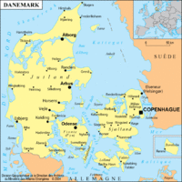

De: La Frikipedia, la enciclopedia extremadamente seria.
De: La Frikipedia, la enciclopedia extremadamente seria. De: La Frikipedia, la enciclopedia extremadamente seria.
| De la serie Países del planeta tierra: | |||||
| Dinḁmårka | |||||
|---|---|---|---|---|---|
| |||||
| Lema: Der er et land (el mejor país del mundo, con diferencia) | |||||
| Himno: We are the champion!
| |||||
| 
| |||||
| Capital | Capónaghe | ||||
| Mayor ciudad | Alborghendagerthenberg (llamado simplemente "Al") | ||||
| Lenguas oficiales | Chimpancé, Engrish, Panocho, danés | ||||
| Gobierno | Monarquía constitucional presidencial | ||||
| Rey | Manolo el del bombo | ||||
| Área | En el culo del mundo | ||||
| Población | 33 millones, 44 de ellos chinos | ||||
| Moneda | Corona danesa (se paga con coronas) | ||||
| Zona horaria | GTM (la última e no se pronuncia) | ||||
| Dominio Internet | .dk (Dakota) | ||||
| Código telefónico | 7898danker
| ||||
| es enemiga de Venecia | |||||
«A ver si ponen un puto puente de una vez»
~ Danés mosqueado por cruzar de isla en isla nadando
«De acuerdo; tu me das tres coronas y yo te devuelvo dos»
~ Dos daneses cambiando la moneda danesa
Dinamarca es un país hecho de Legos situado encima de Alemania, aunque se llevan más o menos como el culo bien. Lo inventó un científico loco, explotando una bomba atómica en el mar y formando mogollón de islas. Aquí vive los legos.
Antes, Dinamarka era una mierda pinchada en un palo península enorme, hasta que un día alguien le quitó al coyote la dinamita y reventó la península. Fue a una isla pero un rumano okupa de mierda se coló en el chalet adosado que se había metido. Cómo se sentía muy solito, le pidió al viejo y a la vieja que vinieran pa' quí. Se acostó con una vikinga y tubo "vinkinguitos", creando una familia. Cómo estaban en el culo del mundo, y necesitaban pasta para cubrir las nececidades de los enanos, vendieron las demás islas. Los subnormales cómo tú que compraron las islas montaron una fiestuqui para celebrar su nueva casa, que le había costado mucha pasta: unos 10000000000000000000000000000000000 macarrones. Llamaron a unas putas para acostarse con ellas y formaron una comunidad. Cómo eran unos gándules de mierda, no crearon puertos, y si querían ver a su primo Juan, tenían que visitarlo nadando. Desde el siglo XIX, los legos atacaron Dinamarka y los sometieron a una exclavitud eterna. Los legos, seres retorcidos y malignos, los echaron a patadas y crearon un nuevo imperio, y ellos se autocreaban aumentando su población.
Suelen vender pañales usados camisetas de todas las selecciones de los países, sobre todo de energía solar en latas de conserva para que no se estropee y también venden los Lego. Cada año sortean gays a los guiris en Christiania, la mayor fábrica de gays del mundo, y los exportan al todo el mundo, sólo superado por su mayor competidor; IKEA.
En el colegio, la asignatura más importante es la natación, ya que es fundamental nadar para pasar de isla a isla. La gastronomía principal es el restaurante Noma, en Capónaghe, y sirven agua con gas y cocina vasca. El deporte principal es el furbo y el tenis, destacando sus mejores jugadores: Mario y Luigi. El arte de Dinamarca está por los suelos entre los más importantes de Europa, y los movimientos religiosos principales son las sectas suicidas el cristianismo y algunos musulmanes que aman a Osama Bin Laden.
| Etnia | Porcentaje (%) |
|---|---|
| Muñecos de LEGO | 55% |
| Duendes | 10% |
| Gays | 10% |
| Capullos |
17% |
| Gordos | 13% |
  Imperios de Europa Imperios de Europa
|
|---|
| Eslovaquia |
Autor(es):